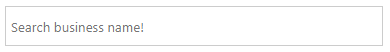
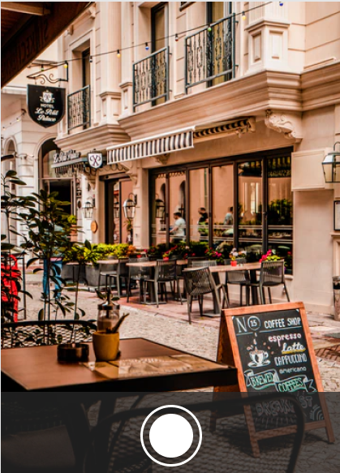

Project Progress
Description
With several tourists set to travel to Melbourne once the pandemic comes to an end, our team decided to put together a project that eases the planning process for families, individuals, and exchange students to travel around.
With most of the team members being international students, we clearly understood the difficulty of trying to move around a new city. Building a website that improves the tourism in Melbourne will in return help build the economy of Victoria after these tough times. The team unanimously decided that this project idea will be very beneficial for all future travellers and students setting their foot in Melbourne.
The planning face of the project went very quick and smooth. After facing all the issues as a new traveller to the state, it was clear for us on what features will be beneficial for the users. We thought from the user’s perspective and choose all the important features that the website will require. Though we knew what we needed to include we were not sure if this was achievable or not from a developer’s perspective. We set out 10 features and picked 5 key features that later acted as the minimum viable feature of the website.
We all lacked the knowledge and the skill required to build and establish a website with all the minimum viable features working. With one of our team members experiencing writing programs in python flask, the rest of us set out to learn a whole new language that we have never used before. This face of the project was very challenging.
Different features of the website were taken up by different members of the group. The final set of MVF’s were:
-
The website allows users to register for a personal account so they can access the system's advanced features like creating businesses, review business, add business to their favourite list and more
-
Business users can sign up as a business owner and then are able to add business advertisements in the mellocal website and can also update their business for offers or new features
-
Providing each business and tourist destination a review system. This allows the user to pick and choose the one that best suits them. This also allows the user to share their experience with other tourists
-
Creating a personal profile for the tourist to add destination or shopping areas to their favourite list for later travel plans. This allows the user to keep track of their searches and to add or delete destinations from their favourite list to plan their day properly
-
Displaying business features is the last but the most important feature of the project, this displays all the important information required for a user and allows the user to get a brief understanding of the business
When we began our project our original plan was to use Python Flask, this was a purposeful decision as many of our group members had experience in HTML/CSS as this would mean that they could assist in creating and rendering templates. After week 7, our lead developer Harry had made significant progress in developing the same application using Node/React. Since there were two concurrent streams of development going on at that time, our group reached a consensus that in order to deliver our MVFs within the proposed schedule we may be required to switch technologies. Node React produced a significant learning curve for our group, with some members unable to contribute to the backend development of the application delegated to later testing.
The issues with node.js came in when we had to render an array to return data and we had to figure out how to do a loop in react. The other major issue with this project came in due to the sudden switch in languages. Most of the team members were in a process to learn python flask, and this sudden switch did not allow most members to switch into a new language all of a sudden. This was later figured out, but led to a stage where not all members could contribute much to the backend of the development stage.
Though we faced all these difficulties throughout the assignment, we take this up as a learning process, to build our skills not only in the technical field but also to improve ourselves when working in a team environment.
Outcomes
MVF 1: User Registration (Harry)
The website allows users to register for a personal account so they can access the system's advanced features like creating businesses, review business, add business to their favourite list and more. To be able to create an account, users need to provide the information requested by the website such as name, email, password, etc.
When guest users want to create an account, they can find a "LOGIN/REGISTER" button on the nav bar. Then click on the "CREATE ACCOUNT" button to open the register form. Users need to fill all the information that the form requires. Also, if users tick on "Sign up as a business" checkbox, they can create and manage their own businesses. After submitting the form, the user will be directly led to the main page of the website. It means you successfully registered.
If a user has already registered for the account, they can login by clicking on the "LOGIN/REGISTER" button and fill the form.
Users can easily find the "LOGOUT" button on the navbar of the website. When clicking on it, the user will lead to the interface for the guest user and sign out their account.
After user login, they can see the "FAVOURITE" button on each business card. Users also can find this button on the detail page of each business when they click on the "VIEW" button. When the user clicks on that button, the number next to the heart symbol will increase based on the number of businesses that you added.
Users can use a favourite list in case they want to find this business quickly. To open the favourite list, users need to click on the heart symbol on the nav bar or go to the url path ‘/favourite’.
MVF 2: Business Advertisement (Eliza)
Business Users are able to sign up to MelLocal by ticking the ‘Sign up as business’ checkbox on the registration form.
Melbourne based business Users have a slightly different navigation bar to regular visitors upon login, in that their view is more focussed around the management of their businesses with the addition of the ‘My Businesses’ navigation option.
Business Users have access to the ‘My Businesses’ navigation option that takes them to a page that contains their businesses listed on MelLocal. Here they can also create categories for their businesses, create a business or delete or edit their existing businesses.
To create a business or category, the admin can click on the “CREATE BUSINESS” or “CREATE CATEGORY” button on the top right corner of My business page.
Creating a Business:
When the admin clicks on the “EDIT” button of the business or category on the My business page, the website will return all the information of the business/category. Then the admin can change that data by changing the form content and submitting it by clicking on the “UPDATE” button. The resulting updated business will then be returned.
To delete the business, the admin can press on the “DELETE” button on each business card, they can check on the business checkbox on the top of each business card if the admin wants to delete multiple businesses. They also can check on the “SELECT ALL” checkbox and press the “DELETE” button next to it if they want to delete all their created businesses.
When the admin clicks on the “DELETE” button, a popup will appear to confirm their decision to delete the selected business.
Deleting a category is different. It first requires the deletion of all associated businesses before the selected category can be deleted.
MVF 3: Experience Review (Shanogeeth)
The website allows the registered users to place their feedback on the particular service experienced. This will help the owner to understand the expectations of the customer and what they think about the service provided.
When the user clicks on the Review button provided on the website next to the business, the user will be directed to the review form above. User details will be obtained from the database once the user login to the website so that the user does not have to re-enter their name in the form. Users can manually enter their feedback on the space provided or they can rate their experience with the five star rating system provided in the dropdown.
Once the user fills in the review form and clicks the ‘Submit’ button, the information will be stored in the database and displays a confirmation message to the user. Then it will be displayed under that specific business with the name of the customer, date, and review comment.
MVF 5: Display Business Information (Luke)
The website will display all the businesses right after the admin created them. It will contain all the information that the admin provided for the website.
The website will display the business location on the map based on the latitude and longitude which the admin provided on “Create Business” form.
The user can also view some information of the business when they click on the flag icon. If they need more information about it, they can click on “MORE INFORMATION” button.
All the information of a business will be shown on this Detail page, it contains image, name, id, average price, address, description, content and menu.
It also displays the related businesses based on the category of that business
This is the main page that displays all the businesses on the database.
MVF 4: Search Filtering (Aswathy)
To use the filter system, users do not need to sign in their account. Users can manipulate directly with it through choosing the option as well as typing the keywords they need to search. Users can use this system on Map page and Directory page. Not only that, they can also use Search, Filter and Sort at the same time if necessary.
On the Filter system, users can choose the category of business that they want to view. So that, they just need to click on these drop down options which are shown on the filter section.

After choosing the category, the website only shows the direction as well as the business card which has the same category that the user chose.

Search system is a specific way to find the business name that the user wants to view. In this search bar, the user needs to type the name of the business. The system will start to compare per character when the user types on this search bar with the database of business names. After that, the system will show the result based on the name that the user searched.
In the Sort system, users can arrange the display order of the businesses on the Directory page by using timestamps and price values on the database of each business.
- “Newest”: display the latest businesses' added first.
- “Oldest”: display the least recent businesses’ added to MelLocal.
- “Price: High-Low”: display the businesses with higher price first.
- “Price: Low-High”: display the businesses with lower price first.
EVF 1: Image Recognition
For our extended feature we came up with the idea of users being able to upload a photo to dynamically recognise their surroundings and suggest businesses that might be at their location. Since visitors to Melbourne may lack the language skills to be able to use map platforms native the country they are in, they will be able to utilise this feature to pull rich data that may not be available on these other platforms (i.e. Baidu maps or other navigation apps that are most tailored towards driving and not pedestrian use).
Users would upload an image using their phone's camera to a cloud image recognition service such as IBM Watson Visual Recognition.

This server would then use machine learning to return a response which would be possible matches to the business a user had just taken a picture of.
EVF 2: Weather Forecast
Users of MelLocal, mostly travelling on foot, need a convenient way to know whether or not it is a good day to go out sightseeing in Melbourne. The integration of a weather API lets users know about the current weather and forecast conditions via the map view.
Users can click on the icon in the bottom right on the page in order to overlay the weather by location similar to a weather radar.
To change the day of the forecast, users can click on the data icon to switch between available forecasts for the coming days.